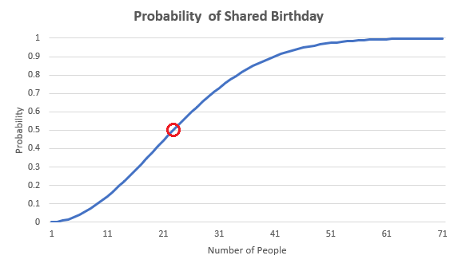
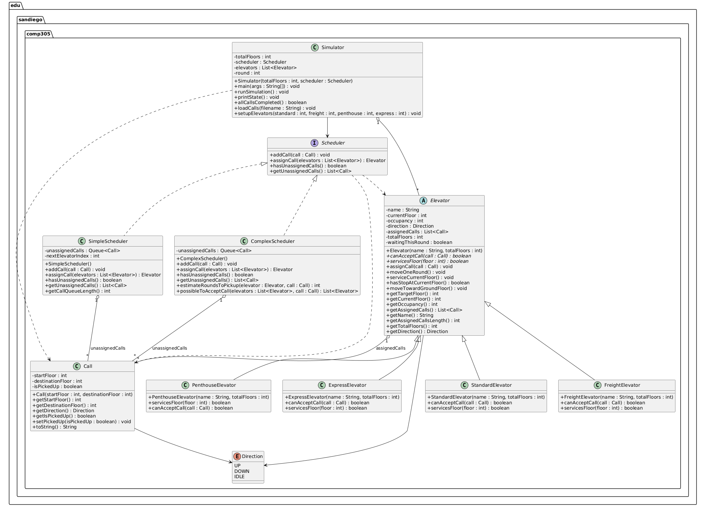

Hello, I'm Riley, I'm from Brentwood CA (Bay Area Brentwood, not LA). I'm a sophomore at University of San Diego and I'm majoring in computer science and minoring in mathematics.
My biggest interest in computer science is cyber security, and I hope to work in this field after I graduate.
My hobbies include surfing, hiking, working out, programming, hanging out with friends, and anything outside really. An interesting thing about me is all of my limbs are double jointed, especially my hands. I can push my fingers really far back.
Projects


Birthday Paradox
We wanted to artificially create experiments using random numbers to determine the legitimacy of a phenomenon that claims if there's 23 people in a room, there's a 50% chance that two people have the same birthday.
The project creates several mock trials and finds the probability that at least 2 people have the same birthday in a sample group.
We created sample groups in incriments of 5 from 5 to 100, and ran 20 trials for each sample group. Their birthdays were completely randomly generated. Then we recorded the percentage of trials which had 1 or more duplicate birthdays.
For creating random birthdays, we just assigned random numbers 1-12 for the month, and then 1-31 or 1-30 depending on the month. Then I used a hash table to record all of the birthdays so that the program wouldn't have to loop through lists over and over again, which saved lots of time. I learned to effeciently compare objects and record data.
Elevator Simulator
In this project, we are coding a system that almost models how an elevator system will work in a building. The goals of this program are to successfully model and simulate the elevators, how the elevators respond to requests, how elevators move between the floors, and the scheduler between the elevators. This project is pushing us to use the four pillars of object orientated programming, as well as the SOLID principles, and also working on our Test Driven Development.
The program is intended to simulate a building with multiple elevators that respond to calls from a range of different floors. It will be the schedulers job to figure out which elevator to send to what floor. Each call to this scheduler will have an initial floor, and then the desired floor to go to. The scheduler will take into account the type of elevator when responding to calls. Elevators will keep track of their current floor, direction, occupancy, and their calls, which will be given to them by the scheduler. Each elevator has its own restrictions, like which direction it can go at a certain time, which floors it can access, and how many can occupy it. The simulation will run until all the calls are successfully handled, and all the elevators are on the ground floor.
Our design makes use of each of the four pillars. Encapsulation is used by keeping fields like floor, direction, and assigned calls private to its class and exposing only methods that other classes need access to. We use the elevator abstract class and scheduler interface for abstraction and to set basic behavior. Inheritance is used through the Elevator class that is inherited by each elevator type. Polymorphism allows for simulator to use the different elevator types uniformly. For SOLID principles, each class has a clear role and follows SRP, Open Closed is supported by new elevator types not requiring any changing of code and Liskov's Substitution is supported since any elevator type can replace their parent class without issue. Interface Segregation is supported by keeping the interface minimal and focused, and Dependency Inversion is upheld by the use of interfaces and abstraction, like Scheduler and Elevator in Simulator, instead of concrete classes.
I was responsible for implementing the Call class, Elevator abstract class, and the 4 concrete elevator classes. This was my first project using test driven development, and I had no idea just how difficult of a hurdle that would be to overcome.
I made a lot of progess in learning test driven development, learning to write the tests before the code was quite a learning curve, and to be frank I'm not the biggest fan of it, but nevertheless I did improve my ability to code with test driven development.
Contact Me
rileymiller@sandiego.edu